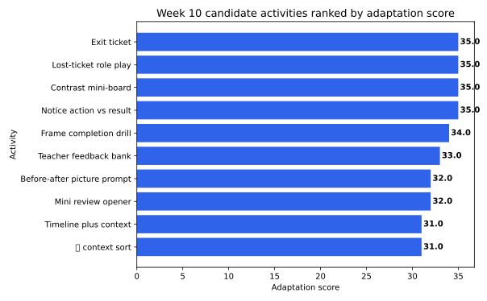
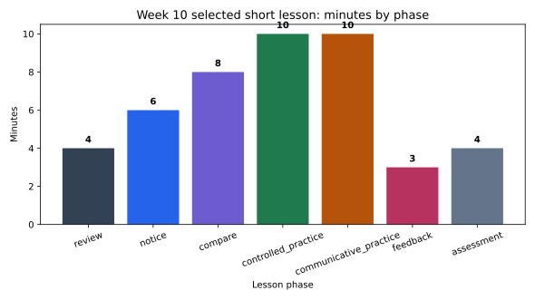

Tuần 10
Pedagogical adaptation
Từ contrastive evidence đến short lesson plan.
25candidate activities
7selected activities
45 minmodel lesson
Bridge
Week 09 chọn pattern; Week 10 chọn activity sequence
Teaching implication cần activity, timing, learner output và limitation.
Week 09contrastive priority
Activityteacher move
Lessonphase + minutes
Paperpedagogical implication
Unit
Một row là một candidate teaching activity
activity_idlesson phaselearner outputassessment evidence
A001noticemarked example cardfocus token highlighted
Caution
Finding không tự biến thành lesson
Yếu: result complements khó, nên dạy nhiềutoo broad
Tốt hơn: chọn một sequence ngắn để thử và kiểm trabounded design
Schema
Dataset nối phenomenon với activity design
phenomenonresult_complement
adaptation_score35.0
lesson_phasenotice
Formula
Score là heuristic lập kế hoạch
adaptation_score = week09_priority_score + learner_difficulty * 2 + communicative_value - preparation_loadScore giúp xếp hàng activity để đọc, không chứng minh effectiveness.
sort
sort_values đưa priority rows lên trước
priority = activities.sort_values("adaptation_score", ascending=False)Đọc top rows, rồi vẫn cần teacher judgment.
group
groupby đọc lesson pacing theo phase
phase_minutes = plan.groupby("lesson_phase")["minutes"].sum()Pacing là một phần của argument sư phạm.
Plan
Model lesson: 45 phút, 7 activities
reviewMini review opener
noticeNotice action vs result
compareContrast mini-board
controlled_practiceFrame completion drill
communicative_practiceLost-ticket role play
feedbackTeacher feedback bank
assessmentExit ticket
Example
Result complement activity sequence
找 / 找到action vs achieved result
tìm / tìm thấyVietnamese bridge
Notice action/result trước khi role play.
Table
Top activity candidates
IDactivityphasescore
A001Notice action vs resultnotice35.0
A002Contrast mini-boardcompare35.0
A004Lost-ticket role playcommunicative_practice35.0
A005Exit ticketassessment35.0
A003Frame completion drillcontrolled_practice34.0
Pacing
Minutes by phase
phaseminutes%
review49%
notice613%
compare818%
controlled_practice1022%
communicative_practice1022%
feedback37%
assessment49%
Figure
Figure 1: activity priority

Figure
Figure 2: lesson phase minutes

Writing
Pedagogical implication = evidence + sequence + limitation
Based on the activity-priority table, I would adapt the short lesson by focusing on ___. The sequence begins with ___ and ends with ___.
Next
Week 11 chuyển sang MT evaluation
Week 10 thiết kế teaching adaptation. Week 11 sẽ đánh giá machine translation outputs.